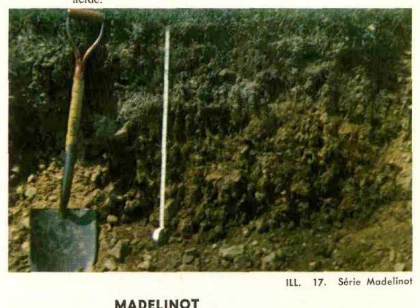

Identification & Caractéristiques Générales
La série Madelinot se développe sur un till local à matrice sablo-limoneuse à limono-sableuse, mis en place dans le contexte géomorphologique insulaire des Îles-de-la-Madeleine. Ce matériau parental morainique, issu de la désagrégation des grès et des siltstones permiens environnants, est caractérisé par une topographie fortement accidentée à accidentée, marquée par des pentes prononcées influençant directement le modelé du paysage et le cheminement des eaux de surface.
Sur le plan morphologique, le profil présente un développement typique de podzol caractérisé par une séquence d'horizons eluviaux et illuviaux bien différenciée. Le drainage naturel est jugé bon, favorisé par la pente et une perméabilité modérée à rapide du profil meuble. La texture des horizons supérieurs varie de sableuse à loamo-sableuse, avec une pierrosité variant de modérée à abondante en raison de la nature caillouteuse du till d'origine. La réaction du sol est fortement acide, reflétant la minéralogie initiale siliceuse du substrat rocheux et la lixiviation des bases échangeables sous l'effet du régime hydrique et climatique local.
Du point de vue agronomique, les potentialités de la série Madelinot sont principalement restreintes par la topographie accidentée et la pierrosité, qui limitent l'utilisation de la machinerie agricole lourde et augmentent les risques d'érosion hydrique sur les versants. L'usage de ces sols se concentre essentiellement sur la production de cultures fourragères pérennes et le maintien de zones boisées. La mise en valeur agricole de cette série requiert des interventions ciblées, notamment un apport régulier d'amendements calciques et magnésiens pour corriger l'acidité, ainsi que la mise en place de pratiques de travail du sol en courbes de niveau afin de mitiger l'érosion.
Classification Taxonomique & Environnement Pédologique
| Ordre Pédologique | Podzolique |
|---|---|
| Grand Groupe (SCSS) | Podzol humo-ferrique |
| Sous-Groupe Taxonomique | Podzol humo-ferrique orthique |
| Famille Pédologique | Squelettique-loameuse, mixte sableux, acide |
| Mode de Dépôt Parental | Morainique sur résiduel |
| Classe de Drainage Naturel | Bien drainé |
| Régime Thermique & Humidité | Frais / Subhumide |
Description Morphologique du Profil Type
Séquences génétiques des horizons pédologiques caractérisant le profil type représentatif de la série Madelinot :
Profil représentatif — Pédologie des Îles-de-la-Madelei
✓ Source : Pédologie des Îles-de-la-Madelei — Page 20Couleur Munsell : 7.5YR 5/4
Structure & Consistance : Polyédrique à granulaire
Description morphologique : Loam limoneux à loam sableux fin brun (7.5YR 5/4); faiblement grumeleux; friable; perméable; fortement acide (a).
Couleur Munsell : 7.5YR 6/2
Structure & Consistance : Polyédrique à granulaire
Description morphologique : Limon gris rose (7.5YR 6/2); particulaire; friable.
Couleur Munsell : 5YR 5/8
Structure & Consistance : Polyédrique à granulaire
Description morphologique : Loam sableux fin rouge jaune (5YR 5/8); particulaire; friable; perméable; fortement acide.
Couleur Munsell : 2.5YR 4/6
Structure & Consistance : Polyédrique à granulaire
Description morphologique : Loam sableux fin à sable loameux rouge (2.5YR 4/6); particulaire; friable; perméable; fortement acide.
Profil cultivé (agricole) — Pédologie des Îles-de-la-Madelei
✓ Source : Pédologie des Îles-de-la-Madelei — Page 25Couleur Munsell : 7.5YR 4/2
Structure & Consistance : Polyédrique à granulaire
Description morphologique : Loam à cailloux anguleux brun foncé (7.5YR 4/2); particulaire à faiblement grumeleux; friable; perméable; très fortement acide.
Couleur Munsell : 7.5YR 6/2
Structure & Consistance : Polyédrique à granulaire
Description morphologique : Limon sableux fin caillouteux gris rose (7.5YR 6/2); particulaire; friable; très fortement acide.
Couleur Munsell : 5YR 4/6
Structure & Consistance : Polyédrique à granulaire
Description morphologique : Limon pierreux rouge jaune (5YR 4/6); particulaire ; friable; perméable; fortement à très fortement acide.
Couleur Munsell : 5YR 3/4
Structure & Consistance : Polyédrique à granulaire
Description morphologique : Limon très pierreux à roc cassé permettant l'infiltration de l'eau et des racines; brun rouge foncé (5YR 3/4); fortement acide.
Profils Photographiques & Planches de Terrain
Documents iconographiques, figures pédologiques et coupes de terrain documentées dans les mémoires d'inventaire pour de la série Madelinot :

Propriétés Physico-Chimiques & Analyses de Laboratoire
| Horizon | Prof. (pces/cm) | Sable % | Limon % | Argile % | pH | C % | N % | Ca éch. | Mg éch. | K éch. | H+ éch. | Bases tot. | C.E.C. (meq/100g) | Saturation % |
|---|---|---|---|---|---|---|---|---|---|---|---|---|---|---|
| Aa | 0 - 5 | 54.6 | 37.8 | 7.6 | 4.8 | 5.76 | 0.34 | 2.4 | 2.4 | 0.2 | 14.0 | 5.0 | 19.0 | 26.3 |
| Ae | 5 - 9 | 54.6 | 37.8 | 7.6 | 4.7 | 2.25 | 0.11 | 0.7 | 1.0 | 0.1 | 8.0 | 1.8 | 9.8 | 18.3 |
| Bf | 9 - 18 | 58.6 | 31.8 | 9.6 | 4.8 | 1.92 | 0.09 | 1.3 | 0.4 | 0.1 | 14.0 | 2.8 | 16.8 | 16.6 |
| CR | 18 | 73.3 | 18.9 | 7.8 | 5.4 | 0.72 | 0.03 | 1.3 | 2.5 | 0.2 | 6.0 | 4.0 | 10.0 | 40.0 |
Particularités Régionales, Phases & Variantes Pédologiques
Déclinaisons régionales, faciès texturaux, phases d'érosion ou de pierrosité et variantes cartographiées par étude pour de la série Madelinot :
| Étude Régionale | Symbole | Appellation / Phase / Variante | Différenciation avec la série type (Analyse pédologique) |
|---|---|---|---|
| Pédologie des Ïles-de-la-Madeleine | M |
Madelinot loam caillouteux | Modalité modale de référence (type de base de la série). |
| Pédologie des Îles-de-la-Madelei | MDI |
Série Madelinot (M) | Conforme à la série type de référence (caractéristiques texturales et drainage identiques). |
Distribution Pédo-Paysagère & Représentativité Cartographique (Couverture PPS 2026)
- Les Demoiselles loam à loam sableux (LML) — co-occurrente dans 9 polygone(s)
- Solomon loam à loam argileux (SLM) — co-occurrente dans 5 polygone(s)
- Pointe-Basse loam (PBS) — co-occurrente dans 4 polygone(s)
Aptitudes Agronomiques, Hydropédologie & Conservation des Sols
Indicateurs Hydropédologiques & Vulnérabilité à l'Érosion (BDHP 2026)
Interprétation BDHP : Potentiel de ruissellement très élevé. Taux d'infiltration très lent, sols très argileux, couches compactes ou nappe temporairement affleurante.
Classement selon l'Inventaire des Terres du Canada (ITC / CLI) : Classe 1.
- Potentiel agricole : Terroir adapté aux cultures régionales selon la texture dominante et la régie de drainage.
- Contraintes majeures : Bien drainé. Risque d'engorgement temporaire ou d'excès d'eau printanier.
- Gestion & Aménagement : Drainage souterrain ou superficiel préconisé sur les terres planes. Chaulage et apport organique régulier selon les bilans agronomiques.
- Cultures adaptées : Grandes cultures (maïs, soya, céréales), prairies fourragères et cultures maraîchères selon le contexte géomorphologique.